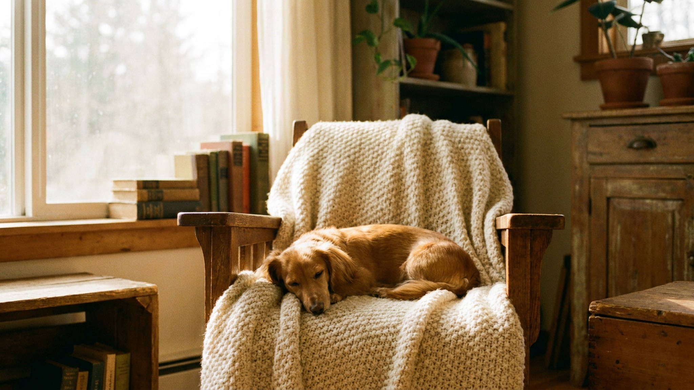

Хозяин берёт цвергпинчера, потому что он маленький и «удобный для квартиры». Через месяц пёс грызёт ножки стула, лает на каждый шорох и бросается на крупных собак во дворе. Миниатюрный пинчер — это не декоративная собака: по энергетике и характеру он ближе к рабочему пинчеру, просто уменьшенный в четыре раза. Ниже — четыре ошибки, которые делают жизнь с ним невыносимой, и как их избежать.
Цвергпинчер весит 4–6 кг, но психика у него — как у рабочей породы. Когда владелец не ставит границ («он же маленький, что с него взять»), формируется классический синдром маленькой собаки: пёс сам берёт на себя роль вожака, решает, кого пускать в дом, командует прогулкой и спит там, где захочет. Итог — постоянное напряжение, непредсказуемая агрессия к гостям, лай без остановки.
Правило простое: воспитывайте цвергпинчера так же, как воспитывали бы добермана. Базовые команды, запрет на прыжки на людей, чёткое место для сна — это не жестокость, это уважение к природе породы.
Миниатюрный пинчер нуждается минимум в двух полноценных прогулках в день — с активным движением, а не просто «вывести в туалет». Без этого избыток энергии идёт в деструктив: лай, разрушения, навязчивое поведение.
🐾 У вас цвергпинчер?
AnimaLife соберёт уход под породу: к каким болезням есть склонность, что проверять по возрасту, чем кормить и когда пора к врачу. Бесплатно, прямо в мессенджере.
Собрать план ухода → Собрать в MAX →
У вас iPhone? AnimaLife есть в App Store
У цвергпинчера почти нет подшёрстка — короткая шерсть не греет. При температуре ниже +10 °C на прогулке нужна одежда: лёгкий комбинезон осенью, утеплённый — зимой. Мёрзнущий пёс становится тревожным и раздражительным.
Вторая проблема — прыжки. Цвергпинчер легко запрыгивает на диван и кресло, но спрыгивать с высоты больше 50–60 см — риск для суставов и лап. Поставьте пандус или ступеньки к любимым местам: порода легко учится ими пользоваться, и нагрузка на суставы снижается кратно.
Цвергпинчер по природе настороженный и территориальный. Если в первые месяцы жизни щенок не познакомился с разными людьми, собаками, звуками и ситуациями — во взрослом возрасте эта настороженность превращается в постоянный лай и агрессию на выгуле.
🐾 Ваш питомец — цвергпинчер?
Заведите профиль в AnimaLife: приложение запомнит породу, возраст и вес и будет подсказывать по уходу именно для неё. Вопросы AI-ветеринару — круглосуточно и бесплатно.
Завести профиль → Завести в MAX →
У вас iPhone? AnimaLife есть в App Store
🐾 Понравился разбор?
Подпишитесь на канал — каждый день разбираем по одному тревожному симптому у кошек и собак: что в пределах нормы, а когда пора к врачу. Подпишитесь, чтобы не пропустить разбор, который может спасти здоровье вашего питомца.
Цвергпинчер — порода для активных людей, которые готовы уделять внимание воспитанию. Тогда это компактный, преданный и невероятно живой компаньон на 12–14 лет. Без системной нагрузки и границ — источник хаоса в маленьком теле.
Материал носит информационный характер и не заменяет очную консультацию ветеринара.